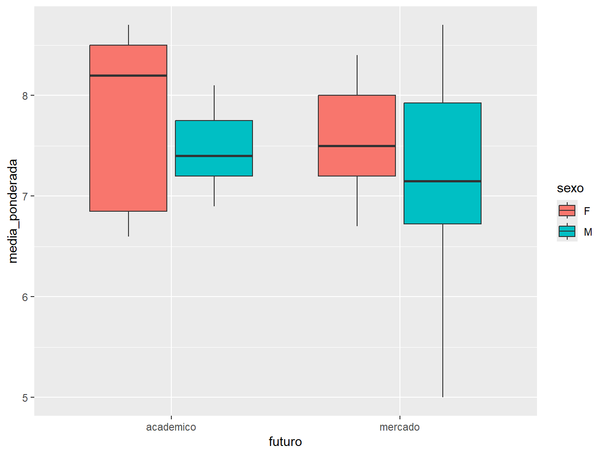

11 Estatíticas
11.1 Introdução
Neste capítulo, trataremos sobre alguns gráficos comuns na área da estatística, utilizando o pacote ggplot2.
Para os exemplos, utilizaremos o mesmo conjunto de dados utilizados no Capítulo 9, presente no arquivo alunos.csv.
dados_alunos <- readr::read_csv("dados/alunos.csv")
dados_alunos
#> # A tibble: 64 × 7
#> sexo idade altura peso horas_estudo media_ponderada futuro
#> <chr> <dbl> <dbl> <dbl> <dbl> <dbl> <chr>
#> 1 M 23 1.75 80 2 7.5 academico
#> 2 F 19 1.67 65 2 8.3 mercado
#> 3 M 19 1.7 90 3 6.9 mercado
#> 4 M 22 1.73 87 3 7.1 academico
#> 5 M 19 1.83 71 2 6.5 mercado
#> 6 M 19 1.8 80 3 8.6 mercado
#> 7 M 20 1.9 90 2 7.8 academico
#> 8 F 20 1.6 55 1 8 mercado
#> 9 F 24 1.62 55 2 8.2 academico
#> 10 F 18 1.64 60 2 7.3 mercado
#> # ℹ 54 more rows11.2 Histogramas
Neste primeiro caso, faremos um histograma referente à média ponderada dos alunos.
Esse tipo de gráfico é útil para verificar a frequência e a distribuição de uma variável numérica que assume uma ampla gama de valores (variável quantitativa contínua). Sua construção é dada pela divisão do eixo x em barras igualmente espaçadas e, no eixo y, apresenta o número de observações dos respectivos intervalos.
Para isso, utilizamos a função geom_histogram(), sendo necessário indicar somente o argumento x =, pois o eixo y será construído, automaticamente, pela contagem dos valores.
ggplot(dados_alunos, aes(x = media_ponderada)) +
geom_histogram()
#> `stat_bin()` using `bins = 30`. Pick better value with `binwidth`.Podemos definir a largura dos intervalos ou a quantidade de barras de um histograma utilizando os argumentos binwidth = e bins =, respectivamente. Em relação à largura dos intervalos, o argumento recebe uma medida nas unidades da variável x. Já a quantidade de barras, por padrão, é atribuído 30 intervalos.
# Gráfico à esquerda
ggplot(dados_alunos, aes(x = media_ponderada)) +
geom_histogram(binwidth = 0.5)
# Gráfico à direita
ggplot(dados_alunos, aes(x = media_ponderada)) +
geom_histogram(bins = 8)
No gráfico à esquerda, definimos uma largura de intervalos em 0.5, ou seja, as notas vão de 0.5 em 0.5. Enquanto isso, no gráfico à direita, definimos 8 barras para a apresentação do histograma.
De acordo com o valor atribuído a quaisquer dos argumentos, podemos observar diferentes padrões. Dessa forma, é importante explorar uma variedade de valores até que os dados estejam bem ajustados ao histograma.
Para melhorar a aparência do histograma, utilizamos o argumento color = para colorir as bordas das barras e o fill = para preencher o seu interior com cor.
# Gráfico à esquerda
ggplot(dados_alunos, aes(x = media_ponderada)) +
geom_histogram(binwidth = 0.5, color = "black", fill = "#00AEF3")
# Gráfico à direita
ggplot(dados_alunos, aes(x = media_ponderada)) +
geom_histogram(bins = 8, color = "black", fill = "#1FC361")11.3 Gráfico de densidade
Uma outra alternativa para representar variáveis numéricas contínuas é o gráfico de densidade. Para isso, utilizamos a função geom_density(). Este gráfico é uma versão suavizada do histograma que nos fornece uma noção sobre a simetria dos dados.
ggplot(dados_alunos, aes(x = media_ponderada)) +
geom_density()Podemos preencher seu interior com o argumento fill = e alterar a transparência da cor com o alpha =.
ggplot(dados_alunos, aes(x = media_ponderada)) +
geom_density(fill = "#AEC70D", alpha = 0.3)Também podemos representar mais de uma densidade em um mesmo gráfico. Basta atribuir uma variável categórica ao argumento fill = e/ou color = para diferenciar as densidades.
ggplot(dados_alunos, aes(x = media_ponderada, color = sexo, fill = sexo)) +
geom_density(alpha = 0.3)11.4 Boxplot
O boxplot ou gráfico de caixas é muito útil para observarmos a posição e a distribuição de valores. Além disso, permite identificar possíveis observações atípicas do conjunto de dados. Para fazermos os boxplots, utilizamos a função geom_boxplot().
ggplot(dados_alunos, aes(y = media_ponderada)) +
geom_boxplot()Nesse primeiro caso, fizemos um boxplot da média ponderada de todos os alunos. A observação representada por um ponto é um valor atípico aos dados.
Podemos incluir uma variável categórica ao boxplot. Como por exemplo, distinguir os dados de acordo com a variável futuro.
ggplot(dados_alunos, aes(x = futuro, y = media_ponderada)) +
geom_boxplot()
Neste caso, podemos ver a distribuição da média ponderada dos estudantes de acordo com as perspectivas futuras de cada um. Para isso, atribuímos a variável categórica futuro ao eixo x.
Ainda, podemos incluir uma segunda variável categórica. Agora, dividiremos os dados de acordo com as perspectivas futuras e o sexo.
ggplot(dados_alunos, aes(x = futuro, y = media_ponderada, fill = sexo)) +
geom_boxplot()
Para isso, atribuimos a variável sexo ao argumento fill =, distinguindo o sexo dos estudantes por cor. Como resultado, podemos observar a distribuição das médias ponderadas de acordo com o sexo e a perspectiva futura dos alunos.
Para conferir os valores utilizados para construir o boxplot, podemos utilizar a função summary().
# Todos os valores de `media_ponderada`
summary(dados_alunos$media_ponderada)
#> Min. 1st Qu. Median Mean 3rd Qu. Max.
#> 5.000 7.000 7.400 7.425 8.000 8.700
# Valores agrupados por `futuro`
dados_alunos |>
dplyr::group_by(futuro) |>
dplyr::summarise(
summary(media_ponderada) |> rbind() |> tibble::as_tibble()
)
#> # A tibble: 2 × 7
#> futuro Min. `1st Qu.` Median Mean `3rd Qu.` Max.
#> <chr> <dbl> <dbl> <dbl> <dbl> <dbl> <dbl>
#> 1 academico 6.6 7.1 7.5 7.58 8.1 8.7
#> 2 mercado 5 6.95 7.4 7.37 8 8.7
# Valores agrupados por `futuro` e `sexo`
dados_alunos |>
dplyr::group_by(futuro, sexo) |>
dplyr::summarise(
summary(media_ponderada) |> rbind() |> tibble::as_tibble()
)
#> # A tibble: 4 × 8
#> # Groups: futuro [2]
#> futuro sexo Min. `1st Qu.` Median Mean `3rd Qu.` Max.
#> <chr> <chr> <dbl> <dbl> <dbl> <dbl> <dbl> <dbl>
#> 1 academico F 6.6 6.85 8.2 7.74 8.5 8.7
#> 2 academico M 6.9 7.2 7.4 7.46 7.75 8.1
#> 3 mercado F 6.7 7.2 7.5 7.61 8 8.4
#> 4 mercado M 5 6.72 7.15 7.21 7.93 8.7Por fim, para calcular a amplitude interquartil (cujo cálculo se dá pela subtração do valor do 3º quartil com o do 1º quartil) utilizamos a função IQR().
# Todos os valores de `media_ponderada`
IQR(dados_alunos$media_ponderada)
#> [1] 1
# Valores agrupados por `futuro`
dados_alunos |>
dplyr::group_by(futuro) |>
dplyr::summarise(iqr = IQR(media_ponderada))
#> # A tibble: 2 × 2
#> futuro iqr
#> <chr> <dbl>
#> 1 academico 1
#> 2 mercado 1.05
# Valores agrupados por `futuro` e `sexo`
dados_alunos |>
dplyr::group_by(futuro, sexo) |>
dplyr::summarise(iqr = IQR(media_ponderada))
#> # A tibble: 4 × 3
#> # Groups: futuro [2]
#> futuro sexo iqr
#> <chr> <chr> <dbl>
#> 1 academico F 1.65
#> 2 academico M 0.55
#> 3 mercado F 0.8
#> 4 mercado M 1.2011.5 Gráfico de barras com desvios padrão
Para adicionar desvios padrão ao gráfico de barras no ggplot2, usamos a função geom_errorbar(), que adiciona barras de erro representando a variação dos dados.
Para isso, utilizaremos os dados do data frame diamonds, conjunto de dados do próprio pacote ggplot2.
diamonds
#> # A tibble: 53,940 × 10
#> carat cut color clarity depth table price x y z
#> <dbl> <ord> <ord> <ord> <dbl> <dbl> <int> <dbl> <dbl> <dbl>
#> 1 0.23 Ideal E SI2 61.5 55 326 3.95 3.98 2.43
#> 2 0.21 Premium E SI1 59.8 61 326 3.89 3.84 2.31
#> 3 0.23 Good E VS1 56.9 65 327 4.05 4.07 2.31
#> 4 0.29 Premium I VS2 62.4 58 334 4.2 4.23 2.63
#> 5 0.31 Good J SI2 63.3 58 335 4.34 4.35 2.75
#> 6 0.24 Very Good J VVS2 62.8 57 336 3.94 3.96 2.48
#> 7 0.24 Very Good I VVS1 62.3 57 336 3.95 3.98 2.47
#> 8 0.26 Very Good H SI1 61.9 55 337 4.07 4.11 2.53
#> 9 0.22 Fair E VS2 65.1 61 337 3.87 3.78 2.49
#> 10 0.23 Very Good H VS1 59.4 61 338 4 4.05 2.39
#> # ℹ 53,930 more rowsPrimeiramente, criaremos um resumo dos dados com média e desvio padrão a partir das funções group_by() e summarise() (vide Seção 7.5).
diamonds_resumo <- diamonds |>
dplyr::group_by(cut) |>
dplyr::summarise(
media_preco = mean(price),
desvio_padrao = sd(price)
)
diamonds_resumo
#> # A tibble: 5 × 3
#> cut media_preco desvio_padrao
#> <ord> <dbl> <dbl>
#> 1 Fair 4359. 3560.
#> 2 Good 3929. 3682.
#> 3 Very Good 3982. 3936.
#> 4 Premium 4584. 4349.
#> 5 Ideal 3458. 3808.Com as medidas calculadas, construiremos o gráfico de barras com a função geom_bar() e colocar os desvios padrão com a função geom_errorbar().
ggplot(diamonds_resumo, aes(x = cut, y = media_preco)) +
geom_bar(stat = "identity", fill = "steelblue") +
geom_errorbar(
aes(
ymin = media_preco - desvio_padrao,
ymax = media_preco + desvio_padrao
),
width = 0.2
)Note que os limites inferior e superior da barra de erro foram construídos a partir da subtração e da soma pela média dos preços de diamantes, respectivamente. Com o argumento width = definimos a largura da barra de erro.
11.6 Resumo
Para saber mais sobre os gráficos estatísticos, confira o seguinte material R Gallery Book.